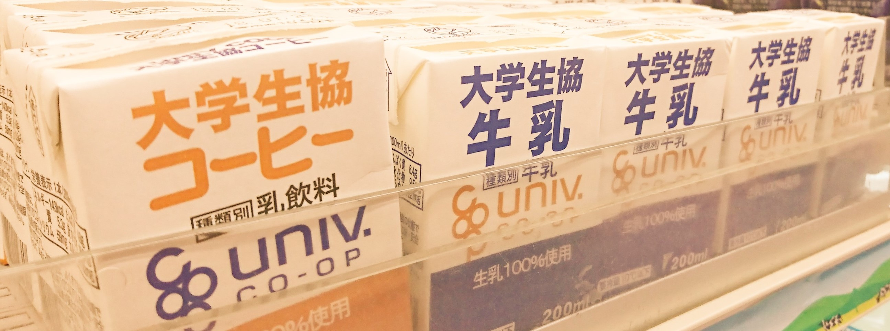
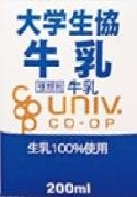
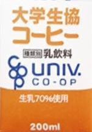

大学生協牛乳

大学生協コーヒー

大学生に大好評の牛乳。
鳥取で採れた生乳100％使用。
毎日この一本が学生の元気の源！
栄養素
| エネルギー |
130Kcal |
| タンパク質 |
6.4g |
| 炭水化物 |
9.5g |
| 脂質 |
7.4g |
| カルシウム |
220mg |
| 食塩相当量 |
0.2g |
生協で大人気の「白バラコーヒー」の大学生協版。
おいしい鳥取産生乳とコーヒーの贅沢な組み合わせ。
一口飲んだら止まらない味わい！
栄養素
| エネルギー |
143Kcal |
| タンパク質 |
4.8g |
| 炭水化物 |
18.9g |
| 脂質 |
5.3g |
| カルシウム |
162mg |
| 食塩相当量 |
0.1g |